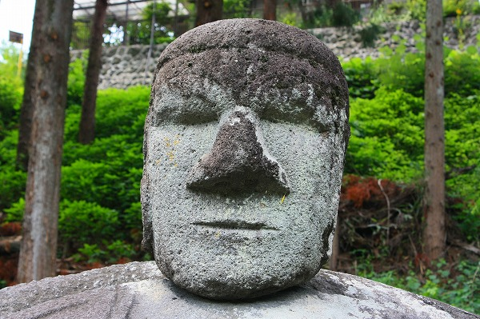
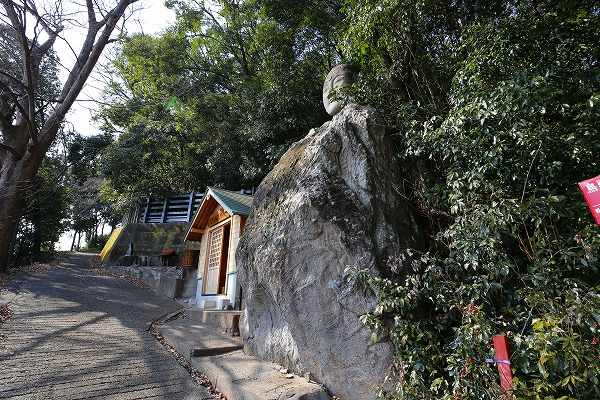
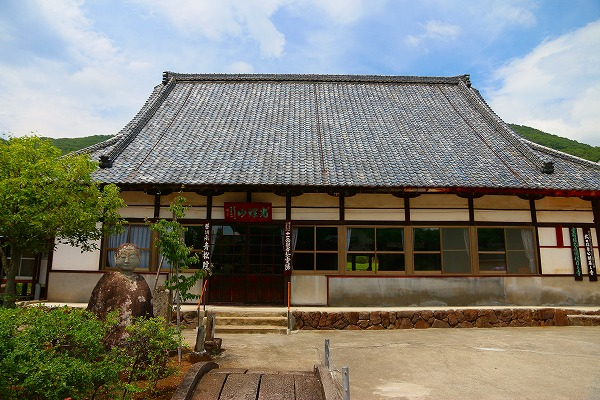

ハナシは長野市下諏訪にある
万治の石仏から始まる。
古今東西の石仏に精通されているであろう当サイトの読者様であれば当然御存じかと思うが、考えてみたらこのサイトで紹介したことがなかったので改めて紹介させて貰いますよ。
この万治の石仏、諏訪大社の下社近くにある。
この石仏が全国的にメジャーになったのは1970年代に岡本太郎が紹介したことに起因するのだが、岡本太郎ってなんだっけ？というZ世代の方々は適当にウィキとかで調べてください…。
この石仏、朝ズバッ！で紹介されたそうです（朝ズバッ！ってなんだっけ？というZ世代の皆さんは適当にウィキとかで調べてください）。
首が伸びる石仏として紹介されたとか。
まあ、どうしようもない内容なので気になる方だけ調べてみてください。
で、肝心の石仏でございます。
田んぼの中に鎮座する石仏。
阿弥陀如来だそうです。
巨大な自然石の正面部分にだけ胴体部分を彫り込み、その
上に頭部を乗せた恰好になっている。
岡本太郎がどうとか朝ズバ！がどうとか言う前に抜群にカッコイイことはお判りいただけると思う。
ついでに香炉も自然石をくり抜いたモノでカッコイイ。
衣の装飾模様はインカやアステカ文明の文様を彷彿とさせる幾何学的なデザイン。
この辺に岡本太郎はコーフンしたんだと思う。
岡本は日本の民俗文化に造詣が深いとされているが、中南米の美術文化にも精通している。
その気持ちは痛いほど判るんだよなあ。
この石仏の魅力は日本的な石仏の範疇を超えて中南米や南太平洋デザインセンスを取り入れている、いや、取り入れたのではなくて結果そうなってしまった点にあると思う。

ホラ、顔とかモアイ像に似てるでしょ？
この耳のデカさも注目していただきたい。
後から見るとこんな感じ。
まるで切り取られたかのような状態になっている。
日本の石仏の中においてもカテゴライズ不能なかなり特異なポジションに位置している石仏だ。
そんな万治の石仏を見て似たような石仏が山梨県にあった事を思い出した。
それは
首地蔵。
これまた
はぐれもの石仏をこよなく愛する当サイト読者におかれましてはご存知の方も多いかと思うが、敢えて紹介させていただきますよ。
…というわけで、久々に山梨県下の首大仏を巡ってみることにした。
最初に訪れたのは山梨市水口にある
首地蔵。
万治の石仏によく似た形状をしている。
巨岩に首が乗っている点は似ているが、
胴体部分に手は加えられていない。
その分、万治の石仏に比べると
よりプリミティブ感が強いように思える。
頭部。
耳が大きく、鼻ががっしりしている点も万治の石仏に似ているような気がする。
この石仏、道にせり出しているように見える。
それにはこの石仏の由来と言い伝えがあるので少しお付き合いくだされ。
むかーし、むかし。
この地で大雨による土砂崩れが起きたとさ。
その際に赤ん坊を背負った子守りの少女が転落してきた大きな岩のの下敷きとなって赤子共々亡くなったとさ。
その後、この村の赤ん坊に夜泣きが増えたとさ。
村では岩の下敷きになった娘の祟りではないかという噂が立ったとさ。
そこに訪れた旅の僧が娘の慰霊のために石で首を彫って岩の上に乗せたとさ。
すると村の赤子たちの夜泣きも治まったとさ。
後年、道路の拡張の際、この岩を動かそう、ということになったとさ。
そこで岩を割るために石屋が穴を開けようとすると石屋は熱を出し寝込んでしまったとさ。
なので今でもこの岩は道路にせり出すように鎮座しているのだとさ。
めでたしめでたし。
…というハナシである。
そういえば万治の石仏でも石にノミを入れたらそこから血が出てきたという言い伝えがある。
動かしたり割ろうとすると祟りが起こるという点も共通しているなあ。
現在でも首地蔵は信仰の対象とされており、少女の慰霊のためなのだろう、草履とけん玉が奉納されていた。
首地蔵の胴体には細長い紙が置かれていた。
字は消えかかってほぼ読めなかったが「春彼岸」と言う部分だけが判別できた。
紙の長さから推定すると何らかの念仏か戒名が書かれていたのではないだろうか。
置かれていた紙片は3つだったが、重しに乗せる小石が幾つかあったので実際にはもう少し多くの紙が奉納されていたと推測できる。
きっと何かの願いをこの首地蔵に叶えてもらおうと縋った痕跡なのだろう。
首地蔵の傍らには
丸石神が祀られていた。
この丸石信仰も山梨県でしか見られない不思議な信仰形態だ。
（参考；甲府市で見かけた丸石道祖神）
台座の上に丸い石が乗っているだけの実にシンプルな神様なのだが、道祖神の一種らしい。
個人的にはこの
首地蔵も丸石信仰に端を発しているのではないか、と睨んでいる。憶測だが。
そう考えると、この首地蔵やこの後紹介する自然石+首という形態は諏訪ではなく、ここ山梨がルーツなのではなかろうか。推測ですけどね。
次に訪れたのは笛吹市の
保雲寺というお寺。
15世紀に創建されたという曹洞宗のお寺である。
その境内の一画にこのような石仏が。
これも首地蔵の一種と考えてよいだろう。
胴体が自然石なのだが何となく座像っぽい所が先程の首地蔵や万治の石仏とは違うといえば違うかもですね。
顔も比較的整っているというか、ワイルドな縄文顔ではないですね。耳は大きいけど。
つまりあまり違和感を感じないというか。そんな感じです。はい。
次に向かったのは甲府市。

甲府善光寺を見下ろす小高い山腹にある
石地蔵である。

坂道の途中に巨石があり、その上に首が乗っかっている。
隣には熊野権現神社の祠。
先程の首地蔵や万治の石仏に比べると顔つきが端正だ。
もしかしたら後から作り直したものなのかも知れない。
それでも横広がりの鼻と大きな耳は健在だ。
かなり不安定な場所に首が載ってますけど、大丈夫か？
と思ったらがっちり金具で補強してありました。

説明書きに寄ればこの石地蔵の建立が宝永4（1707）年。
建立、といっても石は元々ここにあったのだろうから、首を乗せた時期、ということになろうが、万治の石仏の建立が万治3（1660）年だからその約50年後となる。
あれれ？さっき山梨の方が先に出来た説を唱えたが、
早くも瓦解しちゃったぞ…。
祠の横には数体の石仏が並んでいた。
頭が自然石で出来ていた。
恐らく石仏の頭部だけが取れてしまったのだろう。
頭部のないお地蔵さんをよく見かけるが、丸彫りの石像の場合、首の部分が一番細いのでどうしてもそこが割れやすいのだ。
中には頭部のない石仏を見ると廃仏毀釈で頭を切られた石仏に違いない！！！…と妙にいきり立つ方が居られるが、実際は自然に首がとれちゃったケースがほとんどなのです。
頭が自然石で身体が彫像。
いわば逆首大仏というか。
中には身体も加工されていない自然石の上に自然石の頭部が乗っている「石仏」もある。
自然石の上に加工された頭部が乗っている首地蔵にフォーカスして、そのような石仏を尋ね歩いているわけだが、こうなって来るとその意味合いがよく判らなくなってくる。
つまり何でもいいのか？
いやいや。頭が自然石な石像はあくまでも緊急措置的な手段なはず。
自然石の上に加工された頭を乗せるのとは意味合いが違うはず。
次に訪れたのは甲府市の
瑞泉寺
本堂左手前に仏頭がある。
大きな耳。幅広の鼻。首地蔵の特徴を備えているように思えるが、如何に。
このお地蔵さん、
ひきとり地蔵というそうな。
今では人々の苦しみを引き取る、的な意味合いで信仰されているようだが、かつては人が往生する際に楽に極楽に行けるよう導いてくれた地蔵だったという。
また、この仏頭は本堂を新築する際に前庭を掘ったら出て来たともいわれている。
これもまたかつてはどこかの自然石の上に載っていたのだろう。
お次は甲府市の湯村温泉にほど近い
塩澤寺。
弘法大師が開山したといわれる真言宗の寺院だ。
本堂裏手の墓地に…
おっとお～！
凄い顔面の石仏が！
鼻も凄いが目も凄い！
かなり個性的な御顔立ちである。
地元では
たんきりまっちゃんと呼ばれているそうな。
何でも痰や咳の病にご利益があるとか。
元々傾いているのか、段々傾いて来たのか、胴体の自然石が結構傾いている。
その上に首を乗せているので少し前に乗り出している風なポーズとなっている。
それがまた妙な威圧感を醸し出しているのだ。
山梨の顔地蔵の中でも抜きんでたインパクトを放っている地蔵だと思う。
境内には様々な石仏や石塔が並んでいる。
コレは双体道祖神…なのか？
たんきりまっちゃんの近くにも大きな岩があった。
天辺に小さな穴が開いていたが、もしかしたらここにも頭部がはめ込まれていたのかもしれないですね。
ラストは塩澤寺の近くの
青松院。
曹洞宗の名刹だ。、

さて、首地蔵はどこかな、と探すまでもなく本堂前にチョコンと鎮座しているのが見える。
合羽地蔵というそうな。
裾広がりの胴体のかたちが合羽に見えるからだろう。
ここも端正な顔つきのお地蔵さんであった。
以上で山梨の首地蔵巡りは終了。
結局、
諏訪の万治の石仏との関連性はよく判らなかった。
ただ、地理的にも結びつきの強い土地同士なので何らかの影響はある…とは思うんだけどなあ。
そしてどうしても自然石の上に頭を乗せる事の意味について考えてしまう。
これは私見だが、自然石の上に仏頭を乗せる、というスタイルは
元々自然石が持つパワーを仏教の力で制御しよう、という意味なのではなかろうか。
水口の首地蔵に伝わる少女の祟りのハナシが最も象徴的だが、元々石自体の持つアミニズム的な信仰心があった事が大前提となろう。
万治の石仏や水口の首地蔵に手をくわえようとすると怪異が起こる、というのはその自然石が特殊なモノであることを暗喩している。
そのアミニズム的な信仰を押さえつけるために仏教徒が仏頭を据え付けたのではなかろうか。
祟りとか怪異とかといった石をワルモノ的に扱うのもあくまでも仏教徒が石の上に仏頭を乗せたことを正統化する言い訳のように思えて仕方がない。
そういえば、諏訪地方は古代宗教ともいわれるミシャグジ信仰の本拠地とされている。
もしかしたらこれらの自然石はミシャグジ信仰の対象だったのかもしれない。
それを外からやってきた仏教徒がミシャグジ信仰自体を制御するために仏頭を…なーんていうのは考えすぎですか、ねえ。
逆に解せない問題もある。
何故山梨にはこれほど広範囲に首地蔵が見られるのに
諏訪には一ヶ所なのか？
そし万治の石仏が阿弥陀仏なのに対して山梨はみな地蔵なのか？
今後の研究課題とさせていただきつつ結びとかえさせていただきますよ。
…っと、ここでニュースが飛び込んできた。
そっくりさん、巨岩の上に頭 謎解きに感心集まる 下諏訪・東俣川 ／長野 （毎日新聞）
何と
諏訪地方で首地蔵スタイルの石仏が発見されたという。
記事の画像を見る限り、山梨の首地蔵スタイルにそっくりだ。
これは首地蔵界において新展開といって良いと思う。
むむむ…かなり険しい所にあるみたいだが…これはいずれ探しに行かねばらないなー。
ひょっとしたら諏訪には（山梨にも）まだまだ人知れず首地蔵が存在しているのかもしれない。
もし「他にも首地蔵ありますよー」という方がいらっしゃったら是非是非教えてくださいませ。
参考文献
「甲府盆地、北山道の大石地蔵または大首地蔵について」日本の石仏41号（1987年）
毎日新聞2017年9月14日 長野県版